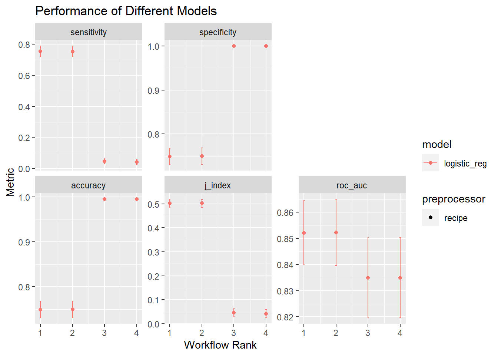
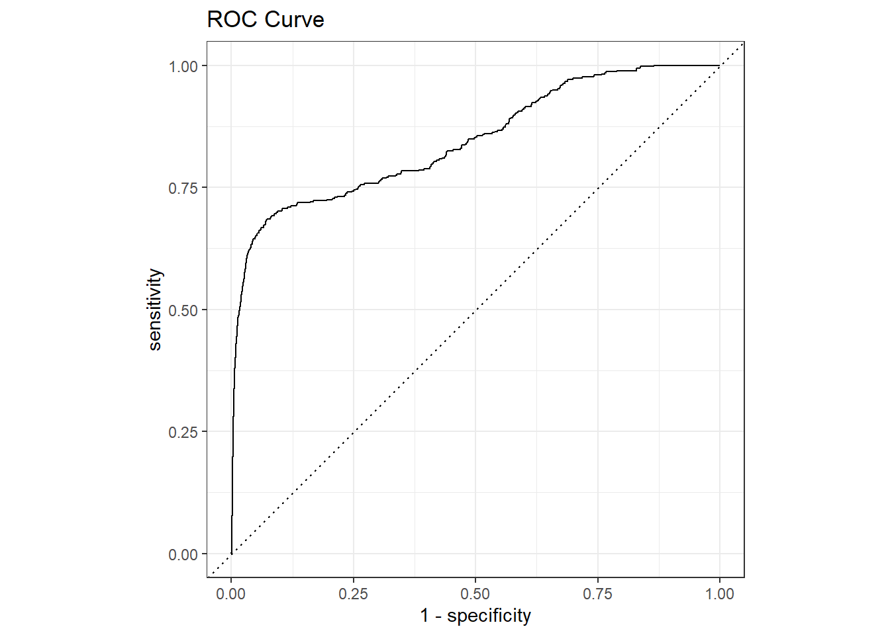
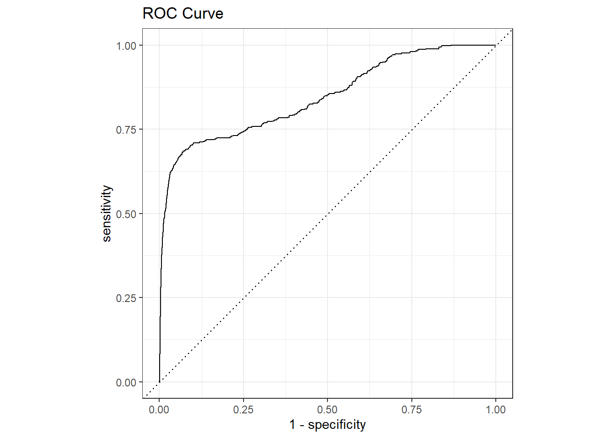

# Code Block 1: Loading Libraries
# loading tidyverse/ tidymodels packages
library(tidyverse) #core tidyverse
library(tidymodels) # tidymodels framework
# Modeling
library(glmnet) # elastic net logistic regression
library(themis) # provides up/down-sampling methods for the dataA Tidymodels Tutorial: A Structural Approach
R
R-code
tidymodels
Machine Learning
Exploring the different steps for modeling
As I’ve started working on more complicated machine learning projects, I’ve leaned into the tidymodels approach. Tidymodels is a highly modular approach, and I felt it reduced the number of errors, especially when evaluating many machine models and different preprocessing steps. (This is, in fact, a stated goal of the tidymodels ecosystem.)
This tutorial is more about understanding the process of modeling in tidymodels and learning about the various objects created at different steps rather than optimizing a machine learning model.
Throughout this tutorial, I will use the word “procedure” to describe a set of steps to go from data to final predictions. I’m doing this because tidymodels uses the word workflow for specific types of objects and functions. It would be too confusing to use workflow to also describe the process/procedure.
But the tidymodels ecosystem can also be very confusing. There are several component packages in tidymodels. While it is easy to explain what a recipe object (from the recipe package) does, it became increasingly difficult for me to name and describe the objects I was creating as I started building more sophisticated machine-learning procedures. And I found it even more confusing that simple and complex procedures, while going through the same basic steps (preprocess, train, evaluate, predict), created objects with different structures and data within them. I found it confusing that fit, last_fit, fit_resamples, etc., did not all produce objects that contained the same information and could be acted on by the same functions. In my first attempt at using last_fit(), I ended up scrapping the entire ML section and redoing it with fit()/predict() because I couldn’t figure out how to get the predictions out of the object created by last_fit().
Adding to my woes was the fact that attempting to view/print/ examine these objects, especially in notebook environments, often caused the entire project to time out. RStudio generally handles these objects more gracefully, but I’ve also crashed it hard. It also isn’t consistent whether an object will lock-up RStudio or not. Once RStudio has locked up, restarting the program leads to an increasing number of freezes/locking up, until the computer is restarted.
I’ve also manually numbered my code blocks and used that for referencing. I believe it is possible to hyperlink code chunks in Quarto, but I plan to replicate this project in an online notebook environment where that isn’t possible. The manual numbering will make it easier to cross-reference the two. I found online notebooks really did not like displaying many tidymodels objects. That’s also why there are timers around many of the display calls.
So here I’m going to go through three different procedures for modeling. I will compare and contrast the objects created as we move through the different procedures.
Loading libraries and Data
Details about how the data was processed can be found at my Credit Card fraud tutorial.
# Code Block 2- loading the processed data
fraud <- read_rds("fraud_processed.rds")
fraud$category <- factor(fraud$category)Tidymodels expects the outcome to be a factor. It also treats the first level as the event. So, Code Block 3 handles these details.
# Code Block 3: outcome to factor and relevel
# in tidymodels, outcome should be a factor
fraud$is_fraud <- factor(fraud$is_fraud)
levels(fraud$is_fraud)[1] "0" "1"#first level is the event in tidymodels, so we need to reorder
fraud$is_fraud <- relevel(fraud$is_fraud, ref = "1")
levels(fraud$is_fraud)[1] "1" "0"Resampling via rsample
The rsample package is used to create splits and folds from your data. Here I use initial_split() to create a testing and training dataset. The resulting object is called an rsplit object and contains the original data and information about whether a record goes to testing or training. This object is not a flat dataframe but rather a nested list. The functions testing() and training() are used to create the appropriate tibbles for fitting. Other functions are available to visualize or manipulate the rsplit object. Typing data_split in RStudio produces a high-level overview of the object:
<Training/Testing/Total>
<254705/84902/339607>
I will also create some cross-validation folds using vfold_cv(). The resulting object is an rset object, which is a collection of rsplit objects (which can be retrieved from the rset object), The same methods to view or manipulate the rsplit object work on the rset object.
Both functions let you sample based on strata. This is highly recommended, especially for classification problems with imbalanced classes. The sample is performed separately on each class, which assures your testing/training/folds contain representative data.
I did notice that the typo “stata” didn’t kick up any sort of error. In fact, you can include any number of named parameters that don’t exist, and you won’t get an error. Positional matching shouldn’t apply if you are using named parameters, but for what it is worth, initial_split(fraud, prop = 0.75, mouse = is_fraud) and initial_split(fraud, mouse = is_fraud, prop = 0.75 ) both execute without complaint. And they both produce stratified samples, which is weird. Don’t rely on this and do check that your splits and folds are properly stratified.
Setting the random seed before running these functions is highly recommended for reproducibility.
# Code Block 4 : Train/Test Splits & CV Folds
# Split the data into a test and training set
# following https://www.tidymodels.org/start/recipes/#recipe
set.seed(222)
data_split <- initial_split(fraud, prop = 0.75, strata = is_fraud)
# Create data frames for the two sets:
train_data <- training(data_split)
test_data <- testing(data_split)
start_time <- Sys.time()
set.seed(123)
fraud_folds <- vfold_cv(train_data, v = 3, strata = is_fraud)
end_time <- Sys.time()
start_time_display <- Sys.time()
fraud_folds # 3-fold cross-validation using stratification
# A tibble: 3 × 2
splits id
<list> <chr>
1 <split [169803/84902]> Fold1
2 <split [169803/84902]> Fold2
3 <split [169804/84901]> Fold3end_time_display <- Sys.time()
print(paste("Making folds: ", end_time - start_time))[1] "Making folds: 0.32884407043457"print(paste("Printing fraud_folds: ", end_time_display - start_time_display))[1] "Printing fraud_folds: 0.0849518775939941"Preprocessing with recipes
The recipes package bundles the formula, data, and feature engineering steps into a recipe object.
I set the formula and training data here and then performed preprocessing/ feature engineering steps. All the feature engineering steps have the form step_*(). I chose the feature engineering steps based on the Appendix from the Tidy Modeling with R book, which lists models and which feature engineering steps are required or recommended.
I want to compare using the full dataset with a downsampled dataset with balanced classes, so I also created a downsample recipe. This section is where the strengths of the modularity of tidymodels start to shine. You can create several related recipes off of a base recipe. For complex projects where many preprocessing steps or different formulas are tested, decoupling the recipe step from the fitting reduces the errors that might arise from creating multiple combinations.
The recipe is built with the training dataset. This data is used to estimate some of the values of the recipe steps, such as the number of dummy variables created, but the recipe isn’t “trained” yet. The recipe will be applied to the training data in later steps, and the necessary values for feature engineering will be calculated and stored. These values will be used on subsequent datasets, such as the testing set. This eliminates a possible source of data leakage. For example, using an imputation step based on the mean should use the mean of the training data and not the entire dataset (which would have information about the testing set within).
There are a variety of functions, such as prep(), bake(), and juice() which can be used to apply the recipe object to datasets. These can be used in the machine learning procedures, but here we will use the workflow procedure, which handles these steps automatically. These functions are found in some tutorials online, so it is important to be aware of them. You can also use these functions to preprocess data for reasons other than modeling.
The recipe object is another complicated object and contains a variety of objects. RStudio provides a high-level summary when you view this object.
# Code Block 5: recipes
recipe_plain <-
recipe(is_fraud ~ ., data = train_data) %>%
step_dummy(all_nominal_predictors()) %>%
step_normalize(all_numeric_predictors()) %>%
step_zv(all_predictors())
recipe_down <-
recipe_plain %>%
step_downsample(is_fraud)
start_time_display <- Sys.time()
recipe_down── Recipe ──────────────────────────────────────────────────────────────────────── Inputs Number of variables by roleoutcome: 1
predictor: 8── Operations • Dummy variables from: all_nominal_predictors()• Centering and scaling for: all_numeric_predictors()• Zero variance filter on: all_predictors()• Down-sampling based on: is_fraudend_time_display <- Sys.time()
print(paste("Printing recipe_down: ", end_time_display - start_time_display))[1] "Printing recipe_down: 0.32622504234314"Defining the model with parsnip
The parsnip package handles the modeling. However, many modeling functions and objects arise from other tidymodels packages, not parsnip, as I will discuss later. This confusion can lead to difficulties in handling fit and predictions.
The type of problem being solved and the method to solve the problem are often bundled together in parsnip, as I’ve done here. I set the type of problem with logistic_reg(). A list of types and engines can be found here. Parameters can be set here to pass to the underlying engine later. The parsnip package is designed to create a harmonized interface to the various independent engines/packages that have been created in R, so you can set the parameters even without choosing an engine/package. For example, all tree-based models will use “trees” for the number of trees. I wanted to tune the hyperparameters of the elastic net logistic regression. This can be done by setting the parameter equal to tune(). I’m not going to get into the tune package in detail, but it contains a variety of functions related to tuning hyperparameters. (This is pretty much the overview statement on the package page, which we will see later is deceptively incomplete.) These are passed to functions of other packages in Tidymodels (e.g., parsnip) and are not really stand-alone functions.
You use set_engine() to specify the particular package you want to use to solve the problem (e.g., glm).
The objects created by these functions don’t have a simple name like the objects created by rsample and recipe do. The function that sets the type of problem creates “A model specification object,” and the set_engine() creates “An updated model specification.”
RStudio will again create a high-level summary of these objects, but using View() reveals that they are a complicated nested list. I don’t think there should be a need to extract components of this object as there might be for some of the earlier objects.
At this point, you can complete your machine learning procedure entirely within parsnip. Various fitting and predicting functions are available. However, I’m going to continue to the workflows package, which will allow us to create bundles of models and fits.
I should note that these are not necessarily the best choices for this problem. I chose logistic regression and downsampling because they were fast, not because they were optimal.
# Code Block 6: Setting engines
# this is the standard logistic regression
logreg_spec <-
logistic_reg() %>%
set_engine("glm")
# elastic net regularization of logistic regression
# this has 2 hyperparameters that we will tune
glmnet_spec <-
logistic_reg(penalty = tune(),
mixture = tune()) %>%
set_engine("glmnet")
start_time_display <- Sys.time()
glmnet_spec Logistic Regression Model Specification (classification)
Main Arguments:
penalty = tune()
mixture = tune()
Computational engine: glmnet end_time_display <- Sys.time()
print(paste("Printing glmnet_spec: ", end_time_display - start_time_display))[1] "Printing glmnet_spec: 0.0121080875396729"Creating a metrics set with yardstick
The yardstick package contains the functions to calculate a variety of metrics such as sensitivity, specificity, etc. I bundled a couple of metrics together as a metrics set, which I will pass to other functions later. The metrics set fraud_metrics contains some metrics that require probabilities, while fraud_metrics_hard only includes accuracy, which uses the hard classifications. These two metric sets will produce different results from fitting and predicting operations, which I will show you later.
# Code Block 7: Setting Metrics
fraud_metrics <- metric_set(roc_auc,
accuracy, sensitivity, specificity, j_index)
fraud_metrics_hard <- metric_set(accuracy)
start_time_display <- Sys.time()
fraud_metrics # A tibble: 5 × 3
metric class direction
<chr> <chr> <chr>
1 roc_auc prob_metric maximize
2 accuracy class_metric maximize
3 sensitivity class_metric maximize
4 specificity class_metric maximize
5 j_index class_metric maximize end_time_display <- Sys.time()
print(paste("Printing fraud_metrics: ", end_time_display - start_time_display))[1] "Printing fraud_metrics: 0.0971019268035889"Bundling everything together with workflows
In my opinion, the workflows and workflowset packages are the most powerful part of the tidymodels system. As I’ve worked through the procedure, I’ve created many objects: datasets with rsample, recipes, and models. I’ve said that modularity is an advantage, but it might be challenging to keep track of which pieces go together when faced with so many different objects. Workflows allow you to bundle your preprocessing and modeling objects together. (In theory, you can also bundle postprocessing objects, but this functionality is not available yet.)
Workflowsets allow you to bundle many workflows into a single object and pass them to fitting or predicting functions as a group. I wanted to evaluate 16 different model/preprocessing pairs in the credit card fraud tutorial. Constructing that many workflows leads to many opportunities for typos or copy/paste errors. But with workflow_set() you can pass the four recipes and the four model specification objects, and the function will create all 16 combinations. If you don’t want all combinations, you can manually construct a workflow_set where you set the combinations you need.
Here I created a simple workflow that contains a single recipe and model specification and a simple workflow_set that contains four workflows.
When called, the RStudio again displays high-level information for the workflow and the workflow_set. Using View() simple workflow shows a nested list structure. Using View() on the workflow_set, even the small one here, crashes RStudio for me.
It is important to keep track of whether you are using workflows or workflowsets because they have different helper functions to extract the final information from the fits.
# Code block 8: Create simple workflow to Compare Fit/Predict and last_fit
wf_simple <-
workflow() %>%
add_recipe(recipe_plain) %>%
add_model(logreg_spec)
# showing high-level info
wf_simple══ Workflow ════════════════════════════════════════════════════════════════════
Preprocessor: Recipe
Model: logistic_reg()
── Preprocessor ────────────────────────────────────────────────────────────────
3 Recipe Steps
• step_dummy()
• step_normalize()
• step_zv()
── Model ───────────────────────────────────────────────────────────────────────
Logistic Regression Model Specification (classification)
Computational engine: glm # Code block 9: creating a workflow set
wf_set_tune <-
workflow_set(
list(plain = recipe_plain, down = recipe_down),
list(glmnet = glmnet_spec, logreg = logreg_spec)
)
start_time_display <- Sys.time()
wf_set_tune #don't call View()!# A workflow set/tibble: 4 × 4
wflow_id info option result
<chr> <list> <list> <list>
1 plain_glmnet <tibble [1 × 4]> <opts[0]> <list [0]>
2 plain_logreg <tibble [1 × 4]> <opts[0]> <list [0]>
3 down_glmnet <tibble [1 × 4]> <opts[0]> <list [0]>
4 down_logreg <tibble [1 × 4]> <opts[0]> <list [0]>end_time_display <- Sys.time()
print(paste("Printing wf_set_tune: ", end_time_display - start_time_display))[1] "Printing wf_set_tune: 0.146723031997681"Fitting: fit()/predict() vs. last_fit()
I’m going to show you the difference between fit()/ predict() and last_fit() using the simple workflow. These are two different procedures that should contain the same results (a fitted model on the training data and the predictions from that model for the test data).
fit()/predict()
First, I fit the model on the training data to get the fit and then I pass that fit and the test data to predict() to get the predictions for test.
# Code block 10: Run fit/ predict on workflow
wflow_fit <- fit(wf_simple, data = train_data)
wflow_predict <- predict(wflow_fit, new_data = test_data)
wflow_predict2 <- predict(wflow_fit, new_data = test_data, type = "prob" )What comes out of predict is super simple to understand. It is a list of predictions. No complicated nested list objects here. If I want probabilities instead of hard classification, I pass predict() the argument type = "prob" to get the probabilities instead.
# Code block 11: Examine the output of predict
head(wflow_predict)# A tibble: 6 × 1
.pred_class
<fct>
1 0
2 0
3 0
4 0
5 0
6 0 head(wflow_predict2)# A tibble: 6 × 2
.pred_1 .pred_0
<dbl> <dbl>
1 0.00367 0.996
2 0.00144 0.999
3 0.0000262 1.00
4 0.00461 0.995
5 0.0000279 1.00
6 0.00138 0.999What about our model? Maybe I want model coefficients or to see which features are most important. There is a lot of information here, but it isn’t very well structured. Again, this is a nested list. RStudio is displaying this nicely and the details can be seen using View().
# Code block 12: Examine the outcome of fit
wflow_fit══ Workflow [trained] ══════════════════════════════════════════════════════════
Preprocessor: Recipe
Model: logistic_reg()
── Preprocessor ────────────────────────────────────────────────────────────────
3 Recipe Steps
• step_dummy()
• step_normalize()
• step_zv()
── Model ───────────────────────────────────────────────────────────────────────
Call: stats::glm(formula = ..y ~ ., family = stats::binomial, data = data)
Coefficients:
(Intercept) lat_trans long_trans
7.06537 -0.10230 -0.01413
distance_miles age hour
0.06526 -0.26818 -0.82812
weekday amt_log category_food_dining
-0.12721 -1.87149 -0.00929
category_gas_transport category_grocery_net category_grocery_pos
-0.62772 -0.29571 -0.67063
category_health_fitness category_home category_kids_pets
0.06286 0.10517 0.01683
category_misc_net category_misc_pos category_personal_care
-0.42138 -0.13380 -0.05152
category_shopping_net category_shopping_pos category_travel
-0.38932 -0.16399 0.18122
Degrees of Freedom: 254704 Total (i.e. Null); 254684 Residual
Null Deviance: 16570
Residual Deviance: 11910 AIC: 11950While you can use standard R operations for interacting with lists and nested data to extract the desired information from wflow_fit, it is much easier to use the broom package. Broom is part of the core tidymodels installation, so it does not need to be installed separately. To get the model coefficients and p-values in tibble form, use tidy(). For high-level statistics about the model, use glance(). Just remember that the information you extract from the output of fit() relates to the model as applied to the training data. For information about the model performance as applied to the test data, you need to use the output of predict(). Since this output is only a vector of predictions, you need to bind it to the test dataframe and then perform analysis on the new object.
So it is pretty straightforward to get our model coefficients:
# Code block 13: Summarize wflow_fit with tidy
wflow_fit %>% tidy() #summarizes information about model components# A tibble: 21 × 5
term estimate std.error statistic p.value
<chr> <dbl> <dbl> <dbl> <dbl>
1 (Intercept) 7.07 0.0703 101. 0
2 lat_trans -0.102 0.0305 -3.36 7.94e- 4
3 long_trans -0.0141 0.0306 -0.462 6.44e- 1
4 distance_miles 0.0653 0.0318 2.05 4.02e- 2
5 age -0.268 0.0289 -9.27 1.87e- 20
6 hour -0.828 0.0397 -20.9 1.27e- 96
7 weekday -0.127 0.0288 -4.41 1.03e- 5
8 amt_log -1.87 0.0510 -36.7 2.76e-294
9 category_food_dining -0.00929 0.0599 -0.155 8.77e- 1
10 category_gas_transport -0.628 0.0593 -10.6 3.62e- 26
# ℹ 11 more rowsOr to get details of the model performance:
# Code block 14: model info from wflow_fit with glance
wflow_fit %>% glance() #reports information about the entire model# A tibble: 1 × 8
null.deviance df.null logLik AIC BIC deviance df.residual nobs
<dbl> <int> <dbl> <dbl> <dbl> <dbl> <int> <int>
1 16568. 254704 -5956. 11953. 12173. 11911. 254684 254705last_fit()
So, from the tidymodels webpage, last_fit() is described as “last_fit() emulates the process where, after determining the best model, the final fit on the entire training set is needed and is then evaluated on the test set.” (Actually this is from the tune subpage, which is important, though I didn’t realize it.)
I pass the workflow to last_fit() along with the data split object (with the info about testing and training) and the metrics set. In theory, the result should be the same as from fit()/predict() above.
# Code block 15: Using lastfit() in hard classifier mode
last_fit_results <- last_fit(wflow_fit, data_split, metrics = fraud_metrics_hard)So, I look at the results just as I did with predict in Code Block 11. And RStudio sometimes locks up. Other times, it produces a high-level overview as expected.
# Code block 16: creating a workflow set
start_time_display <- Sys.time()
head(last_fit_results) # Resampling results
# Manual resampling
# A tibble: 1 × 6
splits id .metrics .notes .predictions .workflow
<list> <chr> <list> <list> <list> <list>
1 <split [254705/84902]> train/test s… <tibble> <tibble> <tibble> <workflow>end_time_display <- Sys.time()
print(paste("last_fit_results: ", end_time_display - start_time_display))[1] "last_fit_results: 0.0753130912780762"So how to get the predictions out? According to the manual page for last_fit(), the output is “A single row tibble that emulates the structure of fit_resamples(). However, a list column called .workflow is also attached with the fitted model (and recipe, if any) that used the training set.” I also see that last_fit() is actually from the tune package and not from parsnip as I expected. Nothing I’m doing here involves tuning hyperparameters at all. I expected that is was a parsnip object both thematically and because you interact with last_fit() using extract_fit_parsnip(), see Code Block 23.
Looking fit_resamples() isn’t very helpful for answering this question. (Oh, but it is. It just took me another few paragraphs of writing to realize it.)
I did find a Stackoverflow discussion that provided the answer in their code: last_fit1_pred <- last_fit1[[5]][[1]]
That’s not very straightforward!
Pull out the predictions from last_fit_pred.
# Code block 17: extracting predictions from last_fit
last_fit_pred <- last_fit_results[[5]][[1]]Look at the head() of this object.
# Code block 18: Examine the outcome of lastfit by head
head(last_fit_pred)# A tibble: 6 × 4
.pred_class .row is_fraud .config
<fct> <int> <fct> <chr>
1 0 1 0 Preprocessor1_Model1
2 0 2 0 Preprocessor1_Model1
3 0 8 0 Preprocessor1_Model1
4 0 12 0 Preprocessor1_Model1
5 0 13 0 Preprocessor1_Model1
6 0 14 0 Preprocessor1_Model1Look at the head() of the object from predict().
# Code block 19: Examine the outcome of predict by head
head(wflow_predict)# A tibble: 6 × 1
.pred_class
<fct>
1 0
2 0
3 0
4 0
5 0
6 0 Use identical() to compare the two hard predictions and verify they are the same.
# Code block 20: showing that predict and the predictions in last_fit are the same
identical(last_fit_pred$.pred_class, wflow_predict$.pred_class)[1] TRUENow, let the realization of what all the stuff about the tune package means hit you. We now know the full secrets of last_fit(). It turns out that any of the helper functions for tuning functions from the tune package work on last_fit() because it is a tune function. I don’t find the documentation for either the helper functions or last_fit() make that connection clear. I think that is what the reference to fit_resamples() on the last_fit() page is getting at.
Tidy Modeling with R also contains an example of using collect_predictions with last_fit(), but most examples are with tuning functions, so obviously from the tune family. One of the tutorials on the main tidymodels webpage does as well. But in general, extracting predictions from the test data is not demonstrated, just collecting metrics and analyzing model performance. So it is hard to google your way to the answer. This is the kind of situation I’ve struggled with throughout learning tidymodels and part of what motivated me to write this tutorial.
So now I get the predictions the easy way.
# Code block 21: Examine the outcome of lastfit by head
head(last_fit_pred)# A tibble: 6 × 4
.pred_class .row is_fraud .config
<fct> <int> <fct> <chr>
1 0 1 0 Preprocessor1_Model1
2 0 2 0 Preprocessor1_Model1
3 0 8 0 Preprocessor1_Model1
4 0 12 0 Preprocessor1_Model1
5 0 13 0 Preprocessor1_Model1
6 0 14 0 Preprocessor1_Model1last_fit_results %>% collect_predictions()# A tibble: 84,902 × 5
id .pred_class .row is_fraud .config
<chr> <fct> <int> <fct> <chr>
1 train/test split 0 1 0 Preprocessor1_Model1
2 train/test split 0 2 0 Preprocessor1_Model1
3 train/test split 0 8 0 Preprocessor1_Model1
4 train/test split 0 12 0 Preprocessor1_Model1
5 train/test split 0 13 0 Preprocessor1_Model1
6 train/test split 0 14 0 Preprocessor1_Model1
7 train/test split 0 16 0 Preprocessor1_Model1
8 train/test split 0 17 0 Preprocessor1_Model1
9 train/test split 0 19 0 Preprocessor1_Model1
10 train/test split 0 25 0 Preprocessor1_Model1
# ℹ 84,892 more rowsAnd can evaluate the model performance.
# Code block 22: collecting metrics from lastfit collect_metrics()
last_fit_results %>% collect_metrics()# A tibble: 1 × 4
.metric .estimator .estimate .config
<chr> <chr> <dbl> <chr>
1 accuracy binary 0.995 Preprocessor1_Model1And extract the fit. This extract_fit_parsnip() result is an identical parsnip object as the workflow_fit object we got from fit() and can be handled the same way (i.e. via broom). You can refer back to Code Block 13 to see the results are the same. This is perhaps the key takeaway; these larger, more complex objects contain the simpler objects (workflows, parsnip objects) and they should be extracted and handled normally. Understanding this will make understanding how to handle a workflow_set() much easier.
# Code block 23: extract model coefficients from last_fit()
last_fit_results %>% extract_fit_parsnip() %>% tidy()# A tibble: 21 × 5
term estimate std.error statistic p.value
<chr> <dbl> <dbl> <dbl> <dbl>
1 (Intercept) 7.07 0.0703 101. 0
2 lat_trans -0.102 0.0305 -3.36 7.94e- 4
3 long_trans -0.0141 0.0306 -0.462 6.44e- 1
4 distance_miles 0.0653 0.0318 2.05 4.02e- 2
5 age -0.268 0.0289 -9.27 1.87e- 20
6 hour -0.828 0.0397 -20.9 1.27e- 96
7 weekday -0.127 0.0288 -4.41 1.03e- 5
8 amt_log -1.87 0.0510 -36.7 2.76e-294
9 category_food_dining -0.00929 0.0599 -0.155 8.77e- 1
10 category_gas_transport -0.628 0.0593 -10.6 3.62e- 26
# ℹ 11 more rowsFitting multiple models at once with workflowsets
I created a workflow_set back in Code Block 9. I pass workflow_map() this workflow_set. The next parameter is what type of fitting you want to do. Here, I used tune_grid and had it generate 6 grid points. For the models that don’t require hyperparameter tuning, the function defaults to fit_resamples instead. The acceptable types of fitting functions are found here. It is important to note that you can only use fitting methods that operate on folds; you cannot pass workflow_map() the entire train or test set and have it work. This caused me a bit of frustration when I was learning this because I wanted to compare the results I got from workflow_map() to process all the models simultaneously to what I got when I ran each model/recipe separately. It is implemented this way to encourage proper methodology and avoid data leakage. When evaluating multiple models, you should not be evaluating with the entire dataset.
# Code block 24: fitting the workflow_set
start_time <- Sys.time()
set.seed(345)
tune_results <-
workflow_map(
wf_set_tune,
"tune_grid",
resamples = fraud_folds,
grid = 6,
metrics = fraud_metrics,
verbose = TRUE, #this gives details about how long each model/recipe takes
#control = control_grid(save_pred = TRUE) #save pred for each fold or not
)i 1 of 4 tuning: plain_glmnet✔ 1 of 4 tuning: plain_glmnet (2m 41.2s)i No tuning parameters. `fit_resamples()` will be attemptedi 2 of 4 resampling: plain_logreg✔ 2 of 4 resampling: plain_logreg (10.9s)i 3 of 4 tuning: down_glmnet✔ 3 of 4 tuning: down_glmnet (11.5s)i No tuning parameters. `fit_resamples()` will be attemptedi 4 of 4 resampling: down_logreg✔ 4 of 4 resampling: down_logreg (2.9s)end_time <- Sys.time()
print("Total Time for this Set: ")[1] "Total Time for this Set: "end_time - start_timeTime difference of 3.124082 minsNow we have another complex object. Displaying this object may or may not work. It has never worked for me and I lost a lot of time figuring that out. I followed a tutorial from Julia Silge did call that object, and it took me a long time to figure out my code was not timing out/locking up from the fitting, but rather from displaying that object.
So we are going to interact via helper functions. I’m using the other metric set I created back in Code Block 7 . Accuracy is generally a terrible metric for highly imbalanced problems; the model can achieve high accuracy by assigning everything to the majority class. Alternate metrics like sensitivity or j-index are better choices for the imbalanced class situation.
# Code Block 25: table of ranked results
rank_results(tune_results, rank_metric = "j_index")# A tibble: 70 × 9
wflow_id .config .metric mean std_err n preprocessor model rank
<chr> <chr> <chr> <dbl> <dbl> <int> <chr> <chr> <int>
1 down_logreg Preprocesso… accura… 0.749 0.0112 3 recipe logi… 1
2 down_logreg Preprocesso… j_index 0.503 0.0102 3 recipe logi… 1
3 down_logreg Preprocesso… roc_auc 0.852 0.00742 3 recipe logi… 1
4 down_logreg Preprocesso… sensit… 0.754 0.0207 3 recipe logi… 1
5 down_logreg Preprocesso… specif… 0.749 0.0114 3 recipe logi… 1
6 down_glmnet Preprocesso… accura… 0.750 0.0113 3 recipe logi… 2
7 down_glmnet Preprocesso… j_index 0.502 0.00986 3 recipe logi… 2
8 down_glmnet Preprocesso… roc_auc 0.852 0.00771 3 recipe logi… 2
9 down_glmnet Preprocesso… sensit… 0.753 0.0207 3 recipe logi… 2
10 down_glmnet Preprocesso… specif… 0.750 0.0115 3 recipe logi… 2
# ℹ 60 more rowsI can visualize this too with the autoplot() function. This is a ggplot type object, so I’m going to throw on a ggtitle. The legend is pretty useless- both the elastic net and regular regression are labeled log_reg (which they are) and the preprocessor is just labeled recipe and not which recipe. This could be cleaned up, but that isn’t really the point of this tutorial.
# Code Block 26: autoplot of best results
autoplot(tune_results, rank_metric = "j_index", select_best = TRUE) +
ggtitle("Performance of Different Models")
Handling a model with no hyperparameters
Normally, we’d want to extract the best recipe/model combination from this set. I’ll do that here. Again, I’m using j-index as my metric and from the output of Code Block 25, we see down_logreg is the best performing model. I extract that workflow from the set of results, and pass it to last_fit().
# Code Block 27: Validating the best model with the test data
validation_results <- tune_results %>%
extract_workflow("down_logreg") %>%
last_fit(split = data_split, metrics = fraud_metrics)Now we can use the same helper functions we did when we used last_fit() on the simple workflow, because we are working with a simple workflow! We pulled just the one workflow we wanted out.
You can see now that in addition to the hard classification we got from last_fit() before we also get the probabilities. This is driven by the metrics that make up the metrics set (see the yardstick section for more information). I use these predictions to create the ROC curve as well.
# Code Block 28: Metric for best model with the test data
head(collect_predictions(validation_results))# A tibble: 6 × 7
id .pred_1 .pred_0 .row .pred_class is_fraud .config
<chr> <dbl> <dbl> <int> <fct> <fct> <chr>
1 train/test split 0.552 0.448 1 1 0 Preprocessor1_Mod…
2 train/test split 0.197 0.803 2 0 0 Preprocessor1_Mod…
3 train/test split 0.0329 0.967 8 0 0 Preprocessor1_Mod…
4 train/test split 0.472 0.528 12 0 0 Preprocessor1_Mod…
5 train/test split 0.0254 0.975 13 0 0 Preprocessor1_Mod…
6 train/test split 0.312 0.688 14 0 0 Preprocessor1_Mod…validation_results %>%
collect_predictions() %>%
roc_curve(is_fraud, .pred_1) %>%
autoplot() +
ggtitle("ROC Curve")
Handling a model with hyperparameters
Suppose the best model was the elastic net. I tuned the hyperparameters when I did the fitting in workflow_map(). How do I deal with that?
First, I need to extract the best set of hyperparameters. Here we aren’t extracting the workflow, we are extracting the workflow set result, which is our set of hyperparameters. This is a really simple object, so you can view it without fear.
# Code Block 29: getting-hyperparameters
best_hyperparam <- tune_results %>%
extract_workflow_set_result("down_glmnet") %>%
select_best(metric = "j_index")
best_hyperparam# A tibble: 1 × 3
penalty mixture .config
<dbl> <dbl> <chr>
1 0.000000137 0.570 Preprocessor1_Model4Our workflow for the glmnet is incomplete because it has tune() for the two hyperparameters, instead of the values. We know the best values (at least from the limited parameter space we explored.) I first extract_workflow() just as I did for the no hyperparameter case and then call finalize_workflow(best_hyperparam). This updates the workflow hyperparameters with the values we found. Everything is identical to the no hyperparameter case or the simple workflow/ last-fit() case. Realizing how/when to extract or reduce the more complex objects to the simpler objects is key to using tidymodels effectively.
# Code Block 30: last_fit for a workflow with hyperparameter
validation_results <- tune_results %>%
extract_workflow("down_glmnet") %>%
finalize_workflow(best_hyperparam) %>%
last_fit(split = data_split, metrics = fraud_metrics)Now we can handle this object exactly as before.
# Code Block 31: Metric for best model with the test data
head(collect_predictions(validation_results))# A tibble: 6 × 7
id .pred_1 .pred_0 .row .pred_class is_fraud .config
<chr> <dbl> <dbl> <int> <fct> <fct> <chr>
1 train/test split 0.551 0.449 1 1 0 Preprocessor1_Mod…
2 train/test split 0.217 0.783 2 0 0 Preprocessor1_Mod…
3 train/test split 0.0342 0.966 8 0 0 Preprocessor1_Mod…
4 train/test split 0.474 0.526 12 0 0 Preprocessor1_Mod…
5 train/test split 0.0263 0.974 13 0 0 Preprocessor1_Mod…
6 train/test split 0.316 0.684 14 0 0 Preprocessor1_Mod…validation_results %>%
collect_predictions() %>%
roc_curve(is_fraud, .pred_1) %>%
autoplot() +
ggtitle("ROC Curve")
So that’s it. I hope this clarifies some of the different procedures you can use to fit models in the tidymodels framework.
Citation
BibTeX citation:
@online{e.sinks2023,
author = {Louise E. Sinks},
title = {A {Tidymodels} {Tutorial:} {A} {Structural} {Approach}},
date = {2023-04-10},
url = {https://lsinks.github.io/posts/2023-04-10-tidymodels/tidymodels_tutorial},
langid = {en}
}
For attribution, please cite this work as:
Louise E. Sinks. 2023. “A Tidymodels Tutorial: A Structural
Approach.” April 10, 2023. https://lsinks.github.io/posts/2023-04-10-tidymodels/tidymodels_tutorial.